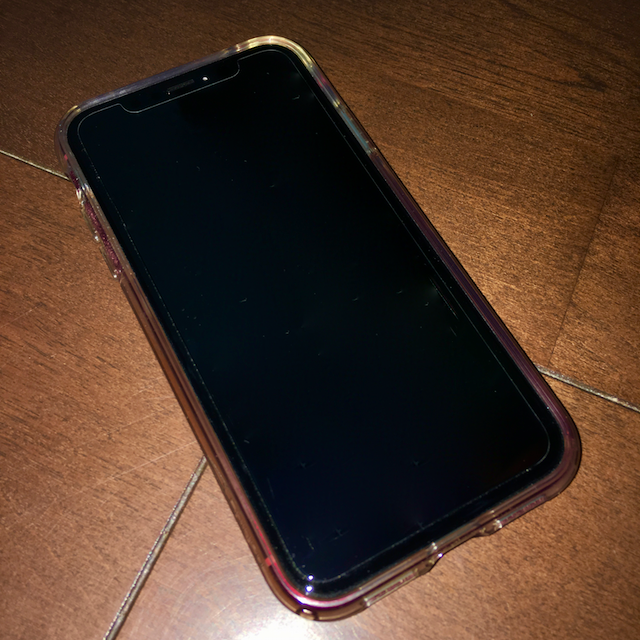
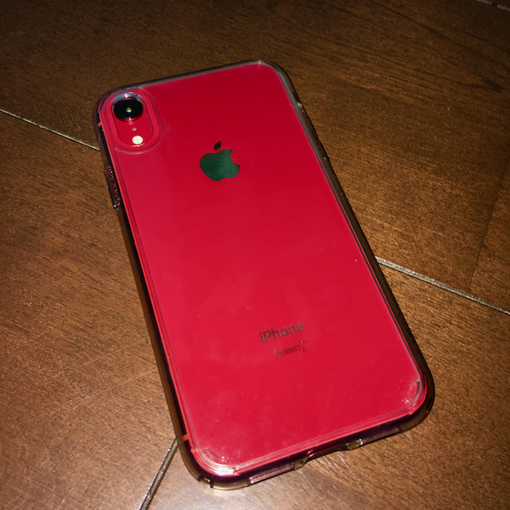

iPhone XR（以下、XR）を購入する前はiPhone 6Sを使用していました。au版を中古で買ったのですがそのままauショップへ持ち込みSIMロックを解除してもらって、SIMフリーとして使っていました。当時刺していたSIMはIIJのデータ通信用SIMだった・・・ような気がします（この頃はSIMカードをコロコロ変えていたものでちゃんと覚えてない・・・）。
ところが、iPhone 6Sの発売は2015年です。さすがに発売から数年も経過してくると、バッテリーのヘタりが目立つようになります。Googleマップのナビで長距離ドライブ、とハードに使用したわけでもないのに、1日を乗り切れないくらい持ちが悪くなってきました。遠出する場合は、もちろんモバイルバッテリー持参が必須。自転車に乗る際のナビ代わりに使用したら、それはもうアメ車のガソリンメーターのように、バッテリーがモリモリ減っていきます。ある意味、見ていておもしろいですが、使う分には恐ろしくてたまりません。
「あ、こりゃダメだ」
そう思っていたころでちょうどiPhone XSやXRが発表されました。これ幸いとばかりに、新機種の購入を検討し始めたわけです。
一番の理由は値段・・・。
当初はXS購入の検討をしました。とはいえ、さすがは最上位機種であるXS。おいそれと購入できるような金額ではありません。いや、わかるんですよ、メチャクチャハイスペックなら値段も相応に高くなるっていうのは十分に理解できます。
でもね、XSってもうちょっとしたノートPC並みの値段してますよねぇ・・・。ノートPCなら、そこそこのスペックでもドキュメント書いたり軽めなプログラムを組めたりするわけですよ。そして、そういう長文が書けるにはやっぱりキーボードが必要なわけです。いくらスマホのスペックがすごいからって、わざわざ外部キーボード買ってまでスマホで文章書こうとは思わないし、まさかフリック入力で文章なんて書いたら腱鞘炎になりかねません。
そして、XSとXRは同じチップセットを搭載しています。
もちろん細かい仕様ではXRはしっかりと廉価版という扱いですが、それでも頭脳であるチップセットは最上位機種A12 Bionicで、XSと同等であるわけです。その上で、XSと比べれば比較的手の届く金額。
「もうXRでいいんじゃね？」
この2点で、XRの購入を決定しました。

ラッキーだったことに、当時手元にMacBook Air（2011mid）や初代iPad miniがあったため、これらをAppleの下取りプログラムに出してApple Storeのギフト券に換えて購入資金の一部にする（うろ覚えだけど、確か3万から4万くらいにはなったような気がする）ことで、多少安くXRを購入することができました。

ちなみに、XRのカラーは（PRODUCT）REDにしました。ケースはSpigenのクリアケースにしました。
以下のメリットは、iPhone 6Sと比較してのメリットですのでご了承ください。
大画面ゆえの情報量
ホームボタンなしのデザインとなり、ほぼ全面で情報が見られる大画面は、一度慣れると戻れないですね。ベゼルはXSに比べると若干太いです。が、このあたりは後述したいと思います。
画面の上部にちょこっと出っ張っているノッチの好き嫌いはあるし、一部アプリはXシリーズの画面に対応してなかったりしますけど。
FaceIDが手軽で便利
iPhoneを取り出し、画面を見ればすぐに操作可能。TouchIDも登場から代を重ねるにつれ高速化していきましたが、「ホームボタンを触れる」アクションはどうしても必要だったわけです。それがFaceIDになることで、そのワンアクションすら必要ではなくなりました。
ただ、朝起きた直後の「起き抜けの顔」でFaceIDやると、必ず認証エラーになるのはなぜなんですかね・・・自分だけですかそうですか。
軽快なレスポンス
もともと、iPhoneとiOSでストレスを感じたことはあまりありませんが、XRでもレスポンスの良さは相変わらずです。むしろ端末本体のレスポンス云々より、回線の速度だったりサーバー側のレスポンスの方が気になるくらいです。あと、iMovieで動画ファイルを編集して書き出すときなどは、高パフォーマンスの恩恵に預かれると思います。
スマホで撮影しただけでは味気ないから、撮影した後にちょっとした動画編集をiMovieを使って行い、ムービーを書き出す。出力が終われば、ムービーはAirDropやAirPlayで共有する・・・なんてのも、全部iPhoneで完結できますし、さらにレスポンスよく作成できます。
YouTuber、とまでは行かなくとも子供やペットのムービーを撮って、ちょっと手間をかけて見栄え良くしたい。そんなときはiPhoneで全部できます。
長時間持つバッテリー
もともとの購入動機だったバッテリーですが、さすがです。動画再生だったりナビだったりで酷使してもしっかり1日持ちます。ライトな使い方をするなら、2日くらいでも十分持つんじゃないでしょうか。
機種変更してから、モバイルバッテリーの出番がすっかりなくなりました。
高性能カメラ
カメラはもう気軽にパシャパシャ撮るなら、もうデジカメを持ち出すまでもないですが、背景をボカしたポートレート撮影もソフトウェア処理で撮影できるようになりました。かなりきれいに背景がボケます。
ムービーもお馴染みのタイムラプス動画などをしっかり常備しています。
動画・静止画ともに手軽さとクオリティを両立させていて、ポイント高いです。
カラーバリエーションが豊富
派手な色いいよー_(┐「ε:)_
耐水性能と防塵性能
水深1メートルで最大30分間の耐水性能です。XS（水深2メートルで最大30分間の耐水性能）よりは少し弱いですが、それでも十分です。
以下のデメリットは、メリットと同様にiPhone 6Sと比較してのメリットですのでご了承ください。
デカい、厚い
iPhone6Sと比べるので、どうしても感じざるを得ません。「デカい」の大画面とほぼ同義語なので問題ないと言えばないのですが、厚いのはちょっとどうにもならないです。端末サイズのせいで、今まで利用していたスマホケースが軒並み利用できなくなりました。いやまぁ、サイズは理解した上で買ったのですが、ケースに入りそうでギリギリ入らなかったときの絶望感と来たら・・・。
コントロールパネルと通知センターの呼び出し方法が似すぎ
どちらも画面の上部から下方向にスワイプするのは共通しています。異なるのは右側で行うか、中央部分で行うか。
カメラが出っ張りすぎ
割と前からそうでしたが、カメラがどんどん出っ張ってます。ケースを着けないのであれば、机などにポンと置くとカメラのせいで必ず不安定です。カタカタ揺れるくらいにはバッチリ不安定です。こればっかりはいただけません。
結局、カメラの出っ張りをカバーできるような厚みのあるケースを購入しました。
ポートレートモードはまだ発展途上
「さっきポートレート撮影いいよ！って言ってたじゃん」と言われそうですが、すいません、手放しで喜べるほどではありません。
多分ポートレート撮影する対象って人物だと思うのです。ところがその人物をポートレートモードで撮影すると、後れ毛のような輪郭のはっきりしないものが背景と一緒にボケてしまうため、妙に輪郭がはっきりしたヘアスタイルに写ってしまいます。要は「不自然」なのです。
さらに、「ポートレートモード」というだけあって、人の顔が判定できないと撮影できません。なのでポートレートモードで静物は撮影できないし、ペットも撮影できません。この場合は通常の撮影モードになります。
一眼レフカメラなどだとボケ感がレンズと撮像素子（やフィルム）とのマッチングで処理されるのですが、XRの場合はソフトウェアが処理します。そのため、どうしてもソフト側の得手不得手が出てきてしまいます。このあたりは、ソフトウェアのアップデートでクオリティーが今後向上していくでしょう。
ただし、個人的にXRのシングルカメラはどうしてもデュアルカメラには敵わないし、一眼レフカメラなどの「専門機器」には敵わないだろうな、という感想です。
それをわかった上で、それぞれを使い分けるのが一番賢いと思います。
以下の点は、自分には気にならなかった（デメリットではなかった）のですが、人によってはデメリットとなってしまう点かもしれません。
イヤホンジャックなし
有線のイヤホンやヘッドホンを使用する人には、結構大きいデメリットじゃないでしょうか。
なお、自分はヘッドホンやイヤホンのコードが邪魔でキライなので、数年前からBluetoothのヘッドホンを使用しています。なので、ヘッドホンジャックなしでも特段困ることはありませんでした。最近ではAirPodのように左右のイヤホン間すらケーブルなしという機種も増えてきましたし、イヤホンジャックの非搭載は個人的に仕方のないことだと思っています。
スクリーンショット
XRでスクリーンショットを撮るには、サイドボタンと音量ボタンを同時に押します。端末の上部をつまむ感じです。慣れないとちょっと戸惑うかもしれません。
ベゼル幅
購入前に少し自分も気になっていた部分です。
XSと比較すると、XRのベゼル幅はやはり広いと言わざる得ません。また、国内外のハイスペックAndroid機でも薄いベゼルを実装した機種が発売されていますので、比べると気になると思います。
ただ、「比べると気になる」は「比べなければ気にならない」ので、実際のところ普段使いにはまったく影響ありませんでした。
3D touch
自分は残念ながら3D touchを有効活用できていなかったので、XRに非搭載でもあまり影響ありませんでした。
XRは将来性を考慮すると妥当なスマホです。
玉石混交のAndroidと比べると、iPhoneシリーズに割高感を感じるのは否定できません。ただ、OSのアップデートは比較的古い機種までサポートされるので、ハードの故障などがなければ購入から長く使えるのがiPhoneの利点です。またリセールバリューが高いことも利点でしょう。
あとこれは蛇足ですが、ARKit3はA12 Bionic、あるはそれ以上のチップ搭載デバイスでしか動作しません。ということは、ARで最大限楽しむ場合での最安値はXRの一択です。
自分はこれを4年くらいは使い倒したいですが、はたして持つかどうか・・・。